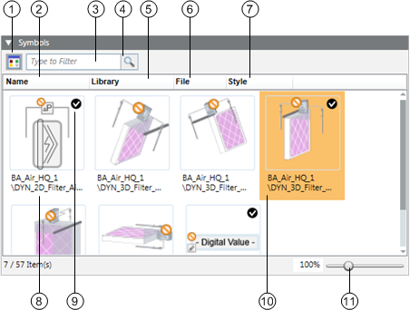
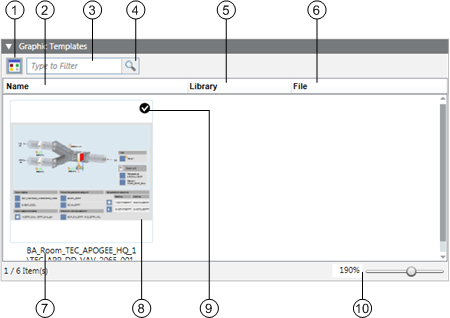

Graphic Templates and Symbols Expanders
In the Models and Functions tab, you can associate graphics or symbols to an Object Model or function. For related procedures see Assigning Graphics / Symbols to an Object Model or Function.
Symbols Expander
In the Symbols expander, you prepare drag-and-drop for graphics engineering:
- Assign symbols
- Define the library style of the symbols
- Define the default symbol for each library style

| Name | Description |
1 |
| Switch from graphical to list view. |
2 | Name | Sort the symbols by name. |
3 |
| Enter a filter criterion. |
4 |
| The symbol changes for an active filter. |
5 | Library | Sort the symbols by library. |
6 | File | Sort the symbols by file name. |
7 | Style | Sort the symbols by library style. |
8 |
| Display the complete library path for the symbol. |
9 |
| Define the default symbol for processing via drag-and-drop for each library style. |
10 |
| The selected object is highlighted in color. |
11 |
| Zoom via slider or directly enter the zoom fact in the % display. |
Use for configuration of all symbols for this object or function. The default symbol is taken over in the graphic via drag-and-drop. Replace the default symbol by another symbol by right-clicking and selecting Set as Default.

Right-click the symbol to delete, copy the reference or set the default symbol.
Graphic Templates Expander
In the Graphic Templates expander, you prepare drag-and-drop for graphics engineering:
- Assign graphic templates
- Define the default graphics template

| Name | Description |
1 |
| Switch from graphical to list view |
2 | Name | Sort the graphic templates by name |
3 |
| Enter a filter criterion |
4 |
| The graphic templates change for an active filter |
5 | Library | Sort the graphic templates by library |
6 | File | Sort the graphic templates by file name |
7 |
| Displays the complete library path for the graphic templates |
8 |
| The selected object is highlighted in color |
9 |
| Defines the default graphic template for processing via drag-and-drop |
10 |
| Zoom via slider or directly enter the zoom fact in the % display |
Use for configuration of all graphic templates for this object or function. The default template is taken over in the graphic via drag-and-drop. Replace the default template by a related graphic template by right-clicking and selecting Set as Default.
Right-click the graphic template to delete, copy the reference or set the default graphic template.